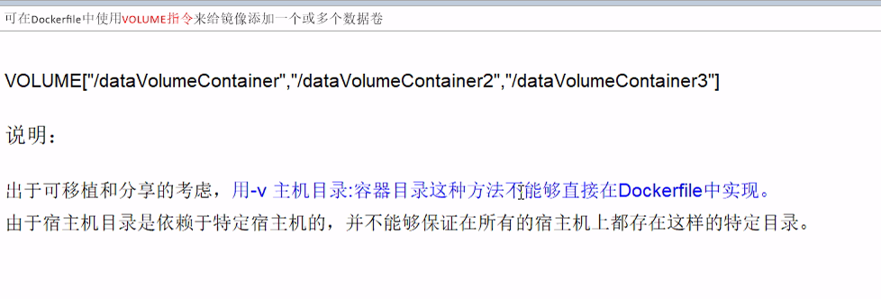
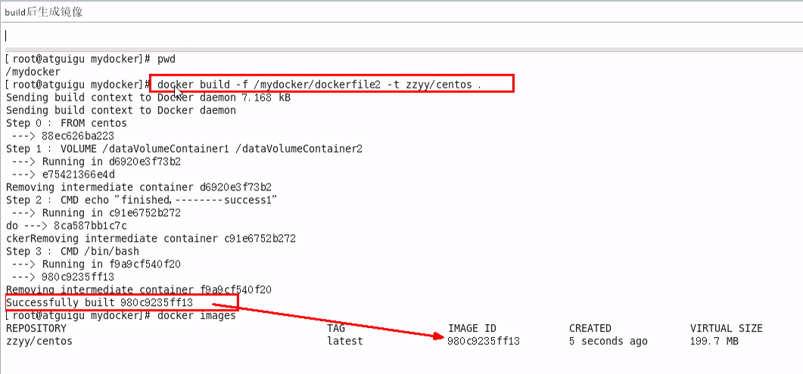
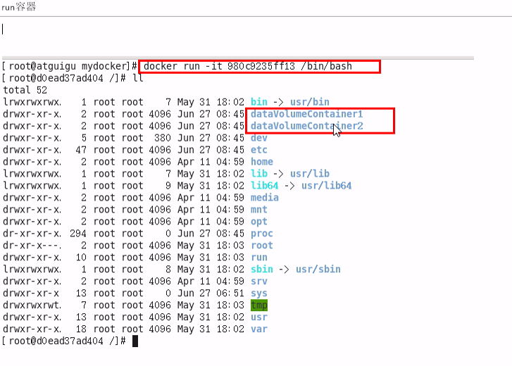
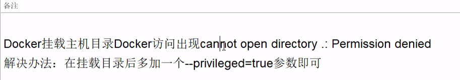
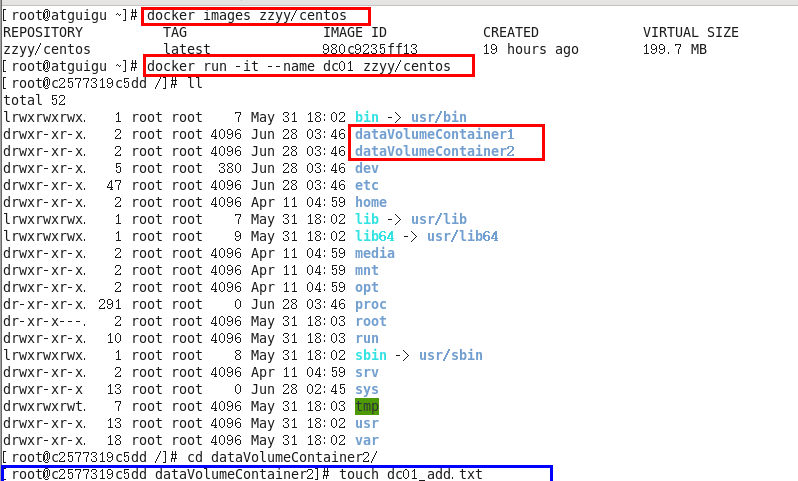
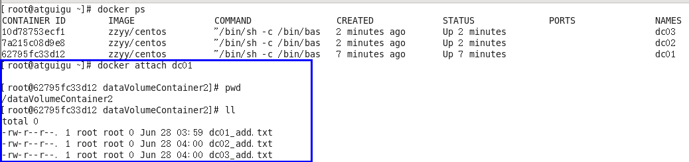
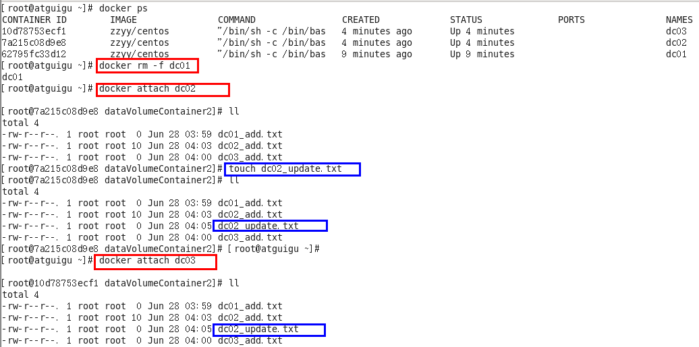
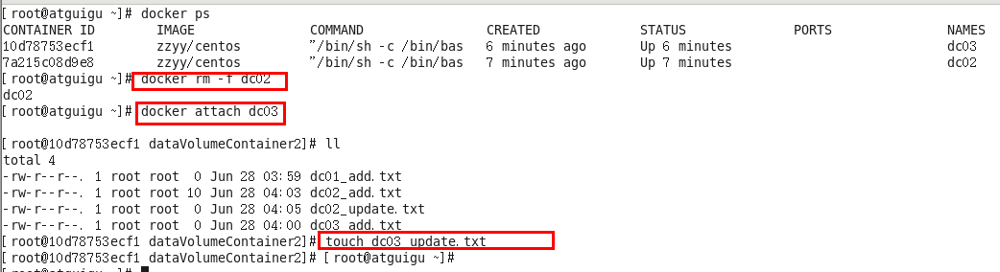
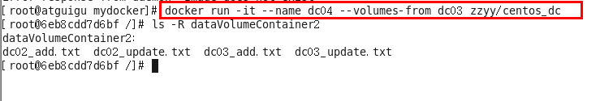
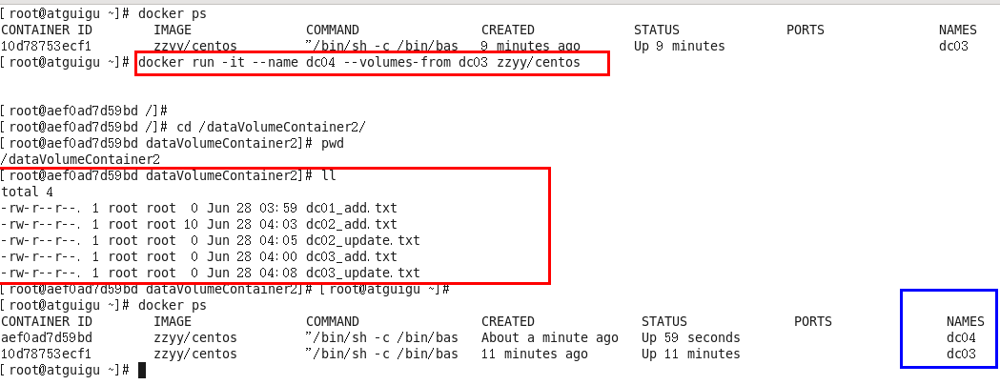

Docker容器数据卷
是什么？
先来看看Docker的理念：
- 将运用与运行的环境打包形成容器运行，运行可以伴随着容器，但是我们对数据的要求希望是持久化的
- 容器之间希望有可能共享数据
Docker容器产生的数据， 如果不通过docker commit生成新的镜像， 使得数据做为镜像的一部分保存下来， 那么容器删除后，数据自然也就没有了。
为了能保存数据在Docker中我们使用卷。
一句话：有点类似我们Redis里面的rdb和aof文件
能干什么？
- 容器的持久化
- 容器间继承+共享数据
卷就是目录或文件，存在于一个或多个容器中，由docker挂载到容器，但不属于联合文件系统，因此能够绕过Union File System提供一些用于持续存储或共享数据的特性： 卷的设计目的就是数据的持久化， 完全独立于容器的生存周期， 因此Docker不会在容器删除时删除其挂载的数据卷
特点：
- 数据卷可在容器之间共享或重用数据
- 卷中的更改可以直接生效
- 数据卷中的更改不会包含在镜像的更新中
- 数据卷的生命周期一直持续到没有容器使用它为止
容器到主机， 主机到容器
从容器内拷贝文件到主机上：
docker cp 容器ID：容器内路径 目的机器路径
数据卷
容器内添加:
1. 直接命令添加
* 命令： `docker run -it -v /宿主机绝对路径目录：/容器内目录 镜像名` v 是 volume 卷

* 查看数据卷是否挂载成功 * 挂载成功 宿主机新建文件夹，容器内新建文件夹
* 容器和宿主机之间数据共享
* 容器停止退出后，主机修改后数据是否同步
* 命令(带权限)`docker run -it -v /宿主机绝对路径目录：/容器目录:ro 镜像名` ro 指 read only
2. DockerFile添加 * 根目录下新建mydocker文件夹并进入 * 可在Dockerfile中使用VOLUME指令来给镜像添加一个或多个数据卷- 
* File构建
* build后生成镜像
* run 容器
* 通过上述步骤，容器内的卷目录地址已经知道对应的主机目录地址哪 * 使用命令 `docker inspect 容器ID`返回一个json串， volume对应的为容器内的卷目录地址， 对应主机目录地址。 * 主机对应默认地址
- 备注
- 
数据卷容器
- 是什么？
- 命名的容器挂载数据卷， 其它容器通过挂载这个（父容器）实现数据共享，挂载数据卷的容器，称之为数据卷容器。（活动硬盘上挂活动硬盘，实现数据的传递依赖。 ）
- 总体介绍
- 以上一步新建的镜像zzyy/centos为模板并运行容器 dc01/dc02/dc03
- 它们已经具有容器卷
- /dataVolumeContainer1
- /dataVolumeContainer2
- 容器间传递共享(-volumes-from)
- 先启动一个父容器dc01

- 然后在dataVolumeContainer2新增内容 - dc02/dc03 继承自dc01 - --volumes -from - 命令 - docker run -it --name dc02 --volumes-from dc01 zzyy/centos
- dc02/dc03 分别在dataVolumeContainer2各自新增内容- 回到dc01可以看到02/03各自添加的都能共享了
- 
- 删除dc01， dc02 修改后 dc03 可否访问
- 
- 删除dc02 后 dc03 可否访问
- 
- 再进一步
- 
- 新建dc04 继承dc03后再删除dc03
- 
- 结论： 容器之间配置信息的传递， 数据卷的生命周期一直持续到没有容器使用它为止